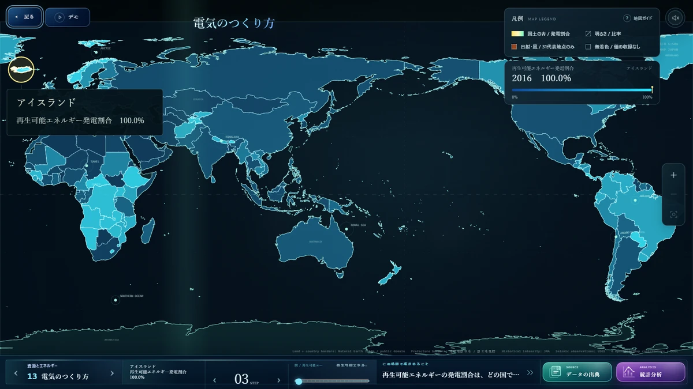
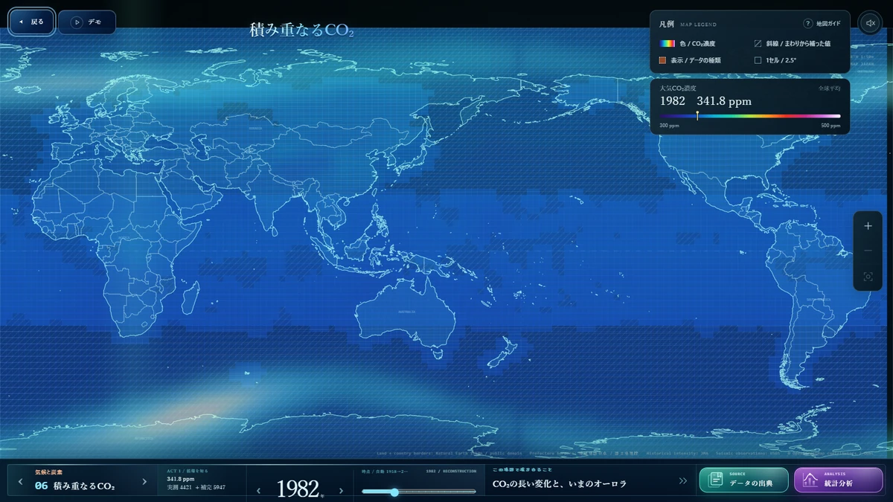
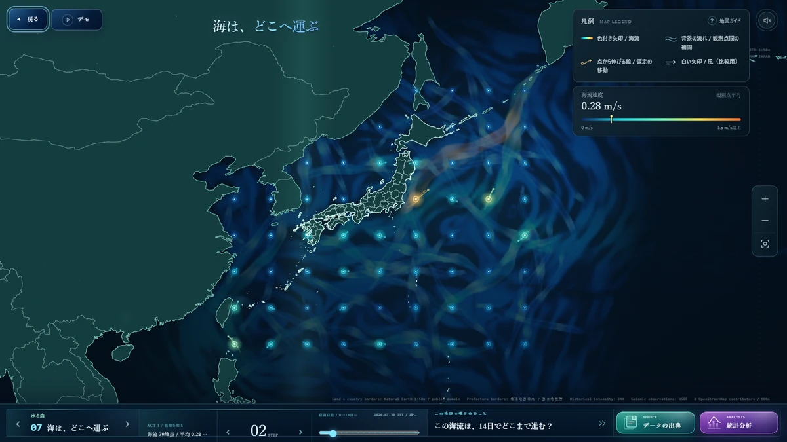
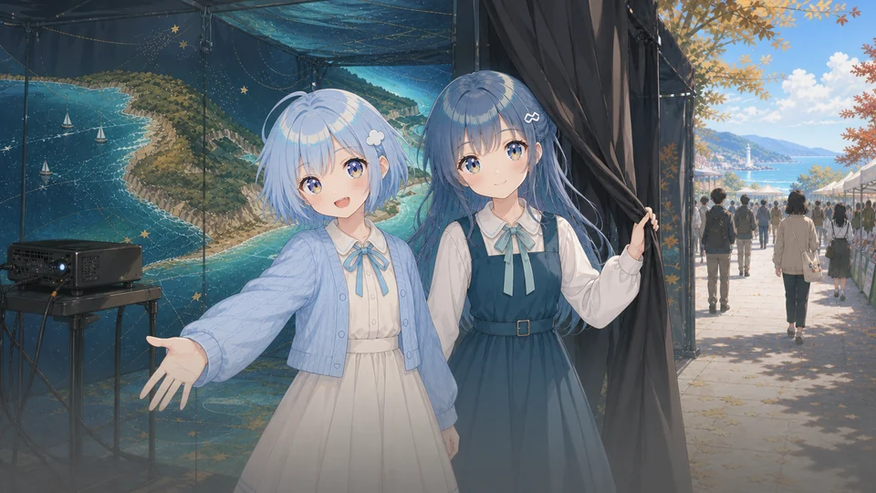
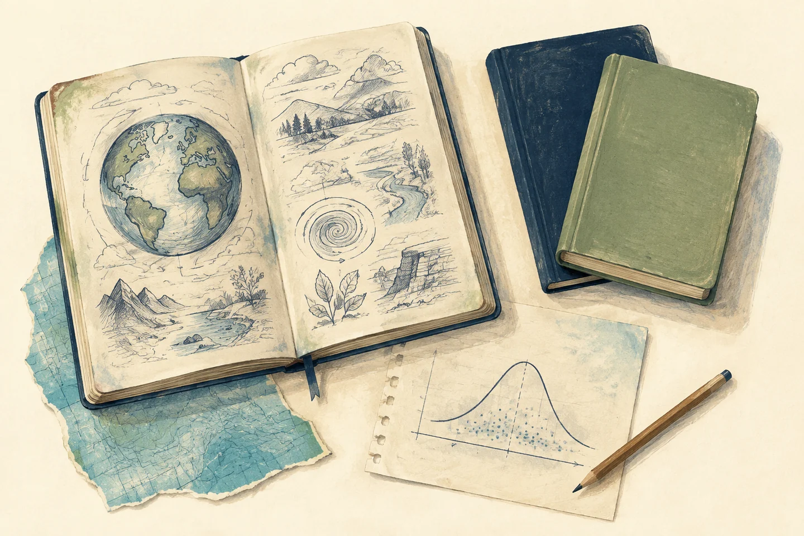
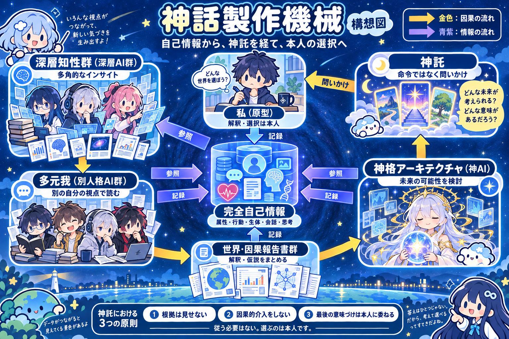

A GIS MODE
世界を、直視する
CO₂濃度や気温偏差などの公開データを、地図と時間軸の上でインタラクティブに可視化。
出典や観測単位を確かめながら、季節の呼吸と半世紀に及ぶ構造的変化を読み解く。
01 ABOUT THE PROJECT 作品概要
GAIA SENSATION
オンライン大学の学生たちが、サークル「惑星の放課後」に集い、地球の観測と展示に取り組む物語。
地球環境のオープンデータを可視化する観測システムと、海辺の展示ブースから始まる出会いを描いた展示参加型ビジュアルノベルです。
宇宙から見下ろす衛星データと、街角の日陰や部屋の机の上で測られた、ちっぽけな一点のセンサー値。冷徹な数値の集積に「人がそこにいた理由」という文脈を重ね合わせたとき、無機質なデータはこの星の確かな鼓動へと変わっていきます。
大気や海洋の循環をその手で巡らせ、居合わせた仲間と言葉を交わす。
この惑星の途方もない時間の中で、いま私たちがどこに立ち、どこへ歩き出すのかを問い直す物語です。

01 THE EXPERIENCE

A GIS MODE
CO₂濃度や気温偏差などの公開データを、地図と時間軸の上でインタラクティブに可視化。
出典や観測単位を確かめながら、季節の呼吸と半世紀に及ぶ構造的変化を読み解く。

B GIS MODE
大気の流れや海流の速さ・向きを動的なグラフィックとして描画。
地域や国境を越えてすべてが連環する、地球規模の巨大な循環を感覚的に捉える。

C STORY MODE
観測ツールを操作しながら読み進める、選択肢のない一本道のビジュアルノベル。
ただ日常を消費するのではなく、「何を調べ、どう生きるか」を思考していく。
02 DEEP CONCEPT
A SMALL POINT ON A PLANET
画面の向こうで受講した講義の中で、私たちは地球の循環、冷徹なデータ、そして人間が紡いできた物語の意味に出会いました。 宇宙から見下ろす地球システムという巨大な知見を、単なる学問や知識で終わらせないこと。街角のセンサーが拾う微かな数値や、放課後のたわいもない会話といった、手の届く「個人の日常」へと接続し直す試み――それが『惑星の放課後』です。

作品を支える、3つのレイヤー情報工学の授業を制作の土台に、それ以外も含め、特に参考にした5つの講義を紹介します。世界観・語り方・データを扱う技術の3層が、本作を支えています。
本作の世界観の出発点。講義に登場するインタラクティブ地球儀「Sphere」に着想を得て、地球の変化に触れる観測体験をつくりました。
本作のシナリオのコアとなった講義。人間とAIの関係や、人が自ら選んで生きることへの問いに着想を得ています。
ストーリー構成の参考にした講義。今回は予定調和的な構成ですが、完全版では講義のエッセンスをさらに取り入れ、没入感を深めたいと考えています。
統計と地球のデータを掛け合わせる発想の土台。観測値の比較や傾向を読み解く、統計分析の体験につなげています。
統計と多様なデータを掛け合わせる着想を得た講義。公開データを整理・統合し、可視化と分析につなぐ設計に生かしています。
03 CORE CONCEPT
THE MYTH-MAKING MACHINE
提示されるのは選択肢。
決めるのは、私自身。
すべてがデータ化され、
神話製作機械は、
確実な未来を
その応答を、ここでは「神託」と呼びます。
従う必要はない。選ぶのは本人です。
因果関係を説明しすぎると、人は自分の人生を最適化アルゴリズムに預けてしまう。神託の根拠は見せない。選択の理由を、機械の計算結果だけで埋め尽くさないためです。
因果的介入はしない。システムが本人に代わって決定を実行したり、報酬や不利益で行動を誘導したりしない。神託を受け入れることも、退けることもでき、その先へ踏み出すかは本人が決めます。
正解を渡して思考を終わらせるのではなく、自分は何を望み、何を引き受けるのかを問い返す。同じ神託から違う意味を受け取ってよい。選ぶ主体としての人間を、判断の中心に戻すためです。

プロフィールや日々の行動、生体データ、会話、さらには思考の断片まで、あらゆる「自分の痕跡」と「システムとの対話ログ」を記録する場所です。
完全自己情報をもとに、さまざまな角度から深い洞察を引き出します。その分析結果もふたたび記録し、私（原型）の観察と更新を続けます。
深層知性群が出した分析を、「もし別の自分ならどう捉えるか？」という複数の視点から読み直します。ひとつの人格に縛られず、いくつもの「自分自身の視座」から状況を見つめ直します。
「多元我」が考え出した様々な解釈や仮説をまとめたレポートです。世界の見方を広げるための検討資料であり、「こう行動しなさい」と指示を出すためのものではありません。
世界と因果のレポートを徹底的に読み解き、「こんな未来の分岐がありうる」という選択肢（神託）を本人へ投げ返します。考えうる可能性の極限までシミュレーションします。
「従うべき命令」ではなく、「自分自身で意味を考え直すための問いかけ」です。 データや正論で人を従わせず、行動を強制せず、自己決定権を留保します。
人生さえも最適解で舗装され、疑うことすら忘れた意志が、静かに消費されていく時代で。
人知が真に目指すべきは、人間を予測し、飼い慣らす檻の完成ではない。計算された予定調和の地平を越え、人が自らの意志をふたたび獲得するための、新たな知の循環だ。